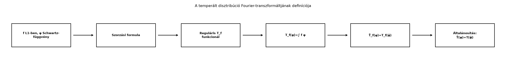

A temperált disztribúciók Fourier-elméletének alapkérdése, hogyan
lehet a Dirac-delta „spektrumát” pontosan értelmezni. A szemlélet azt
súgja, hogy ha a
egyetlen időpillanatba koncentrált ütés, akkor a Fourier-képének
minden frekvenciát egyenlő súllyal kell tartalmaznia, tehát
.
Ebben az alfejezetben ezt az állítást a temperált disztribúciók nyelvén
definícióvá és bizonyított azonossággá tesszük.
18.2.1 Motiváció
A Disztribúciók: a Dirac-delta pontos
jelentése alfejezetben a
-t
már nem függvényként, hanem lineáris funkcionálként kezeltük:
minden Schwartz-próbafüggvényre. A Fourier-transzformációt azonban eddig
elsősorban
-függvényekre
és a Schwartz-térre értelmeztük. Ha közvetlenül a definíciós integrálba
írnánk be a
-t,
az
kifejezésnek nincs értelme, mert a
nem függvény. Mégis szeretnénk megőrizni azt a szép szabályt, amely
-függvényekre
igaz: a Fourier-transzformált „átteszi” a súlyt az
hullámra. A megoldás az, hogy a Fourier-transzformáltat nem az
integrálformulával, hanem a próbafüggvényekre gyakorolt hatással
definiáljuk.
18.2.2 Szemléletes kép
A következő folyamatábra azt mutatja, hogyan jutunk el a függvényekre
érvényes szorzási formulától a disztribúciók Fourier-transzformáltjának
definíciójához.

A temperált disztribúció
Fourier-transzformáltjának definíciója - A szorzási formula: ∫ f̂ φ = ∫ f
φ̂ vezet a T̂(φ)=T(φ̂) definícióhoz.
A gondolat tehát: ha egy disztribúcióra úgy akarjuk értelmezni a
Fourier-transzformáltat, hogy a reguláris függvényekből származó
disztribúciók esetén visszaadja a szokásos függvénytranszformáltat,
akkor a próbafüggvényen kell elvégeznünk a Fourier-transzformációt.
18.2.3 Előzmények: Schwartz-tér és
temperált disztribúciók
Schwartz-tér olyan sima függvényekből áll, amelyek minden
deriváltjukkal együtt minden polinomnál gyorsabban csökkennek. A
Fourier-transzformáció
lineáris bijekció
-ről
önmagára, és az inverze
A Disztribúciók: a Dirac-delta pontos
jelentése alfejezet definíciója szerint temperált
disztribúciónak az
téren értelmezett folytonos lineáris funkcionálokat nevezzük; ezek terét
jelöli. Minden
tehát egy leképezés
amely lineáris, és
az
topológiájában esetén
.
A Dirac-delta a
funkcionál, az eltolt Dirac-delta pedig
.
18.2.4 A szorzási formula: a híd a
függvények és a disztribúciók között
A Fourier-transzformáció kiterjesztésének kulcsa az
-függvényekre
érvényes egyszerű azonosság, amelyet most lépésenként bebizonyítunk.
Tétel (szorzási formula). Ha
és
,
akkor
Bizonyítás. A bal oldalt a Fourier-transzformált
definíciójával felírva
Mivel
,
,
és
,
ezért
integrálható. Ugyanígy
integrálható a szorzattéren, hiszen
és
korlátos. Ezért a Fubini-tétel A Tonelli és Fubini
tétele szerint alkalmazható, és az integrálok sorrendjét
felcserélhetjük:
A belső integrál éppen a
Fourier-transzformáltja az
pontban, tehát
∎
A szorzási formula azt mondja ki, hogy a Fourier-transzformáltat
áthelyezhetjük az egyik tényezőről a másikra, ha az integrálban
mindkettővel „összeszorozzuk”.
18.2.5 A temperált disztribúció
Fourier-transzformáltjának definíciója
Ha egy
függvényhez tartozó reguláris disztribúciót
definiálja, akkor a szorzási formula szerint
Ez a megfigyelés motiválja a következő definíciót.
Definíció (temperált disztribúció
Fourier-transzformáltja). Legyen
.
A
Fourier-transzformáltja az az
temperált disztribúció, amelyre
Ugyanezt a
párosítási jelöléssel:
A definíció értelmes, mert
folytonos lineáris bijekció a Schwartz-téren, ezért
is folytonos lineáris funkcionál, vagyis valóban
eleme. A definíció konzisztens a szokásos függvénytranszformálttal abban
az értelemben, hogy reguláris
esetén
18.2.6 A Dirac-delta és a konstans
függvény transzformáltja
Most kiszámítjuk a legfontosabb példákat.
Példa:
.
A definíció szerint minden
esetén
Az utolsó kifejezés éppen a konstans
függvényhez tartozó reguláris disztribúció hatása
-re.
Ezért írhatjuk:
A
itt a konstans
függvényt, pontosabban annak
reguláris disztribúcióját jelöli. Ez az eredmény fogalmazza meg
precízen, hogy a Dirac-delta Fourier-transzformáltja minden frekvencián
.
Példa:
.
Bár az
függvény nincs
-ben,
temperált disztribúcióként értelmezhető, mert
minden
esetén véges. A Fourier-transzformált definíciója szerint
Az Az inverziós tétel következménye a
Schwartz-térbeli inverziós formula:
Ezért
tehát
A két azonosság együtt azt fejezi ki, hogy a Fourier-transzformáció a
pontba koncentrált
-t
a szétterült
-re,
a szétterült
-et
pedig a pontba koncentrált
-ra
cseréli.
18.2.7 Eltolt Dirac-delta és
komplex exponenciális
Kidolgozott példa:
Fourier-transzformáltja. Az eltolt Dirac-deltát a
funkcionál definiálja. Ekkor
Ez éppen az
függvényhez tartozó reguláris disztribúció hatása
-re.
Tehát
Szavakban: a
pontból
-ba
eltolt Dirac-delta Fourier-transzformáltja az
fázisfüggvény. A fázis abszolút értéke
,
így a frekvenciatérben a nagyság mindenütt ugyanakkora, csak a fázis
fordul el.
Kidolgozott példa:
Fourier-transzformáltja. Tekintsük az
függvényhez tartozó temperált disztribúciót:
A definíció szerint
Az inverziós formula ismét azt adja, hogy
ezért
Tehát
Ez pontosan a
eset tükörképe.
18.2.8 Tiszta frekvenciák: a
koszinusz és a szinusz transzformáltja
Az Euler-formulával
Mivel a Fourier-transzformáció lineáris a temperált disztribúciókon,
a fenti példákból azonnal kapjuk:
illetve
Ezeket a képleteket úgy olvassuk, hogy a frekvenciatérben a tiszta
és
frekvenciájú rezgésekhez két Dirac-tömeg tartozik. Ez a mértékelméleti
képe annak, hogy egyetlen frekvenciájú, időben végtelen hosszan tartó
rezgés spektruma egyetlen pontba koncentrálódik.
18.2.9 Szabályok
disztribúciókon
A definíció különösen kényelmes, mert automatikusan átörökíti a
függvénytranszformáció algebrai szabályait. A pontos levezetések mind
ugyanazt a mintát követik: a definíció alapján a szabályt átírjuk a
próbafüggvényre, alkalmazzuk a már ismert
-beli
Fourier-szabályt, majd visszaírjuk a disztribúcióra.
Állítás (eltolás, moduláció és deriválás). Legyen
.
Ekkor:
Itt
,
ahol
,
és
a disztribúció-derivált.
Bizonyításvázlat. Az eltolási szabály esetén a
definíciót alkalmazva
A konvolúcióval kapcsolatban annyit jegyzünk meg, hogy ha
és
,
akkor a disztribúció és próbafüggvény konvolúciójára — ahol az
értelmezve van — érvényes az
szabály. Az általános disztribúciók konvolúciója azonban túlmutat
ezen a kurzuson.
18.2.10 Összefoglaló táblázat
18.2.11 Egy ellenpélda: nem minden
funkcionál temperált
Nem minden lineáris funkcionál lesz folytonos a Schwartz-téren, ezért
fontos, hogy a definíció az
térben dolgozik. Tekintsük például a formális
funkcionált. Ez nem definiálható minden
esetén, mert például a
függvény eleme a Schwartz-térnek, hiszen minden deriváltjával együtt
gyorsabban csökken minden polinomnál, ám
amely nem integrálható
-en.
Ezért
nem temperált disztribúció. Az ellenpélda arra figyelmeztet, hogy az
exponenciálisan növekvő súlyok már kivezetnek az
térből.
18.2.12 Tipikus hibák és
félreértések
összekeverése. A helyes azonosság
és
.
A két állítás nem ugyanaz: az első azt mondja, hogy a pontszerű ütés
spektruma konstans, a második azt, hogy a konstans függvény spektruma
pontszerű.
Konvenciókeverés. Ebben a könyvben a
Fourier-transzformált
-t
tartalmaz, ezért
.
Ha valaki az
konvenciót használja, akkor
jelenik meg. Az összes fenti képlet csak a könyvkonvenció mellett
érvényes.
A konstans függvény
-beli
hiánya. Az
-et
nem lehet a szokásos integrálképlettel definiálni, mert
.
Az
-et
temperált disztribúcióként kell értelmezni, és a transzformáltja az
inverziós tételből adódik.
Reguláris disztribúció és függvény azonosítása.
A
egyenlőség azt jelenti, hogy a disztribúció hatása megegyezik az
függvény reguláris funkcionáljának hatásával, nem pedig azt, hogy
Fourier-transzformáltja pontonként
függvény.
18.2.13 Feladatok
1. Fogalmi feladat. Definiáld a temperált
disztribúció Fourier-transzformáltját, és indokold, miért lesz
is temperált disztribúció.
2. Számolási feladat. Számítsd ki a következő
temperált disztribúciók Fourier-transzformáltját: (a)
;
(b)
;
(c)
;
(d)
.
3. Bizonyítási feladat. Bizonyítsd be a modulációs
szabályt: ha
,
akkor
4. Alkalmazási feladat. A deriválási szabály
segítségével határozd meg
Fourier-transzformáltját. Magyarázd meg, miért írható a rácsra
koncentrált
disztribúció Fourier-transzformáltja formálisan
alakban; ez készíti elő a A Poisson-összegzés,
mintavételezés és aliasing alfejezetben tárgyalt összefüggést.
18.2.14 Megoldások
1. megoldás. A
definíciója
.
Mivel
folytonos lineáris bijekció a Schwartz-téren, és
folytonos lineáris funkcionál, ezért
is folytonos lineáris funkcionál, tehát
.
2. megoldás. (a) A
képlet szerint
választással
A
képletben
,
tehát
,
így
Hasonlóan
,
tehát
A deriválási szabály szerint
.
3. megoldás. A definíciót alkalmazva a modulált
disztribúcióra:
A függvény-Fourier-szabály szerint
,
mert
Így
Tehát a modulációs szabály teljesül.
4. megoldás. A deriválási szabály szerint
A
összeg formális Fourier-transzformáltját a linearitás és a
-képlet
adja:
Ez a formális sor a Poisson-összegzésben jelenik meg, ahol a bal
oldal a periodikus Dirac-fésű, a jobb oldal pedig a frekvenciatérbeli
periodikus fésű.
18.2.15 Rövid összefoglaló
A temperált disztribúciók Fourier-transzformáltját a szorzási
formulából kiindulva a
definícióval értelmeztük. Ez konzisztens a függvénytranszformálttal:
reguláris
esetén
.
Kiszámítottuk a legfontosabb párokat:
,
,
,
,
továbbá
és
.
Az eltolás, moduláció és deriválás szabályai változatlanul érvényben
maradnak. Továbbvitt eredmény: a
azonosságot használjuk a A Poisson-összegzés,
mintavételezés és aliasing alfejezetben a Dirac-fésű
transzformáltjának levezetéséhez, valamint a Záróprojekt: a fő tételek numerikus próbája
alfejezetben a disztribúciós azonosságok numerikus ellenőrzéséhez.
18.2.16 Források és ellenőrzési
hiányok
Az alfejezet a klasszikus Fourier-analízis és disztribúcióelmélet
standard anyagát követi (Folland, Stein–Shakarchi, Rudin). A
forráskiindulópontok listája nem tekinthető ellenőrzött hivatkozásnak;
az itt közölt állítások a könyv korábbi eredményeire, elsősorban a
szorzási formulára, a Schwartz-tér Fourier-tulajdonságaira és az
inverziós tételre épülnek.